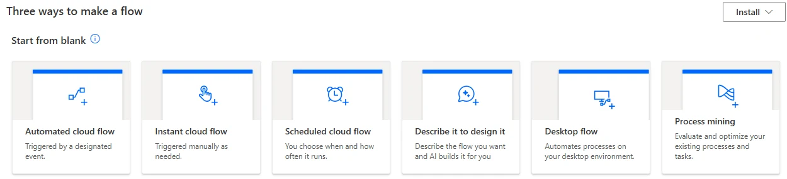

- Power Automate
- Level 1 · Foundations · 1 of 7
What is Power Automate? The types of flows
Power Automate runs small programs, called flows, that do routine work for you: copy data between apps, send a reminder, ask a manager for approval. You build a flow by placing steps on a canvas instead of writing code.
The first decision for every flow is what starts it. That choice decides which kind of flow you create.
Three ways a cloud flow starts

| Kind | Starts when | Typical use |
|---|---|---|
| Automated | Something happens in another app, such as a new email or a new row in a list | Tell the team when a request is submitted |
| Instant | A person presses a button, in the portal, the mobile app, Teams or a Power App | Send a report on demand |
| Scheduled | A clock: every hour, each Monday at 9 AM | Daily clean-up or a weekly summary |
The other tiles
- Describe it to design it: you write what you want in plain words and Copilot drafts the flow. You still check every step.
- Desktop flow: automates clicks and typing in desktop apps and websites that have no API (robotic process automation).
- Process mining: analyses how a process really runs, to find where automation would help.
New to this? Start from the basics optional
Trigger: the single step at the top of a flow that starts it. Every flow has exactly one.
Action: any step after the trigger. Actions do the work: send an email, create a row, compose some text.
Connector: a ready-made bridge to an app (Outlook, SharePoint, Dataverse, Teams). It gives you that app's triggers and actions.
Run: one execution of a flow, from trigger to last action. Each run is recorded so you can inspect it later.
Build it step by step optional
- Go to make.powerautomate.com and sign in with your work or school account.
- Check the environment name at the top right. Practise in a sandbox or developer environment, not production.
- Select Create in the left menu.
- Pick Instant cloud flow for your first try: it is the easiest to test because you start it yourself.
- Name it, choose Manually trigger a flow, and select Create. The designer opens. The next article builds from here.
Three ways to start building
| Start from | What you get | Good for |
|---|---|---|
| Blank | An empty canvas with the trigger you choose | Learning, and flows you want to understand fully |
| Template | A ready-made flow for a common job, such as saving email attachments to OneDrive | A quick start you then adjust |
| Describe it (Copilot) | A draft flow built from a sentence such as "When a file is added to a library, post in Teams" | Getting the shape of a flow fast |
Whichever you choose, open every action afterwards and check its settings. Templates and Copilot drafts are starting points, not finished flows.
The connectors you add also decide the licence: standard connectors (SharePoint, Outlook, Teams) come with Microsoft 365, and premium ones (Dataverse, HTTP, SQL Server) need a Power Automate licence. Licensing basics for flows covers this in Level 5.
Common mistakes
- Building in the default environment and later struggling to move the flow. Create flows inside a solution from day one.
- Choosing a scheduled flow that checks for changes every few minutes, when an automated trigger would react to the change directly.